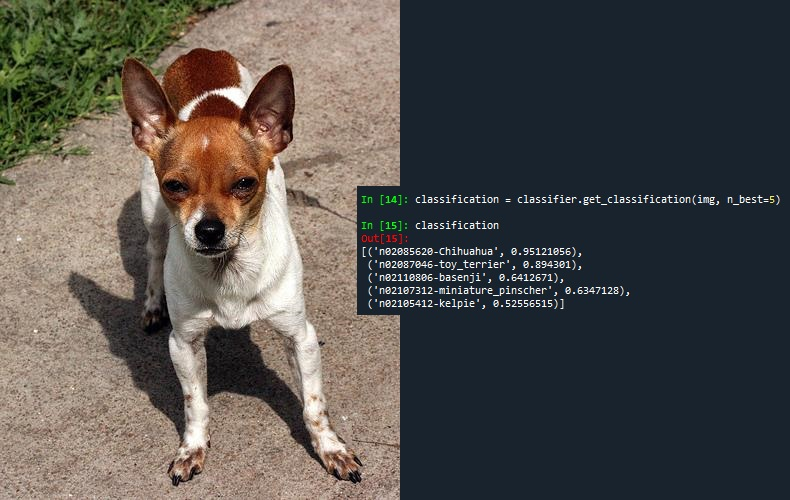

Ricardo R. Barioni
Address
Recife/PE - Brazil
Contact
Email: rrbarioni@gmail.com
Phone: 55-81-985582677

Professional Experience
Machine Learning Engineer @ SiDi (Jan. 2021 - Current)
- Speech processing
Academic Researcher @ Voxar Labs (Aug. 2016 - Aug. 2020)
- Computer vision and Machine learning
Education
M.Sc. in Computer Science
- Aug. 2018 - Jul. 2020
- Federal University of Pernambuco (UFPE)
B.Sc. in Computer Science
- Apr. 2014 - Jul. 2018
- Federal University of Pernambuco (UFPE)
Interests
- Natural Language Processing
- Computer Vision
- Machine Learning
- Augmented Reality
- Natural Interaction
- Data Visualization
Research and Development
Voxar Labs
- Academic research focused in natural interaction and machine learning
- Technique enhancement of human pose estimation methods from RGB inputs
Samsung
- Enhancement of user experience on extended realities, in collaboration with Voxar Labs
Samsung
- Enhancement of computer vision's state of art methods, in collaboration with Voxar Labs
Voxar Labs
- Academic research focused in data visualization
- Development of a web tool for analyzing bat populations from thermal images obtained on caves
Voxar Labs
- Academic research focused in natural interaction and augmented reality
- Technique enhancement of therapeutic exercise orientations on augmented reality applications using biomechanical gestures recognition and functional gestures recognition methods exploration
Involved Publications
Barioni, Ricardo R., et al. HuTrain: a Framework for Fast Creation of Real Human Pose Datasets
Costa, Willams, et al. Songverse: a digital musical instrument based on Virtual Reality
Cavalcanti, Virgínia C., et al. Usability and effects of text, image and audio feedback on exercise correction during augmented reality based motor rehabilitation
- Elsevier Computer & Graphics (C&G) Special Issue at 2019 21st Symposium on Virtual and Augmented Reality (SVR)
Barioni, Ricardo R., et al. BalletVR: a Virtual Reality System for Ballet Arm Positions Training
- Full paper at 2019 21st Symposium on Virtual and Augmented Reality (SVR)
Costa, Willams, et al. Songverse: a music-loop authoring tool based on Virtual Reality
- Full paper at 2019 21st Symposium on Virtual and Augmented Reality (SVR)
Barioni, Ricardo R., et al. Human Pose Tracking from RGB Inputs
- Full paper at 2018 20th Symposium on Virtual and Augmented Reality (SVR)
Santana, Maria I., et al. ARkanoidAR 2.0: Otimizações em uma solução de realidade aumentada com base em testes de usabilidade
- Poster at 2018 26th Congresso Brasileiro de Engenharia Biomédica (CBEB)
Barioni, Ricardo R., et al. ARkanoidAR: an Augmented Reality System to Guide Biomechanical Movements at Sagittal Plane
- Full paper at 2017 19th Symposium on Virtual and Augmented Reality (SVR)
Certificates
Device-based Models with TensorFlow Lite
- Course provided by deeplearning.ai at Coursera
Improving Deep Neural Networks: Hyperparameter Tuning, Regularization and Optimization
- Course provided by deeplearning.ai at Coursera
Introduction to Machine Learning in Production
- Course provided by deeplearning.ai at Coursera
NLP / Sequence Models
- Course provided by deeplearning.ai at Coursera
Involved Projects

Dog Breed Recognition
This project is an algorithm for recognizing dog breeds from RGB images. By using Python and the PyTorch open-source machine learning framework, it applies convolutional neural network techniques for the classification of dog breeds and supports the enrolling of new dog breeds dynamically.

BalletVR

This system is a virtual reality application for guiding ballet dancers through learning and practicing basic ballet arm positions. By using a Microsoft Kinect for tracking the dancer's performed poses, the system compares them with basic arm positions, proposed by École Française, and allows the dancer to practice autonomously.
Musical Invaders

Based on the original 1978 arcade shooting game called Space Invaders, it is a web game where the player controls a spaceship, whose objective is to prevent aliens to reach earth by shooting musical notes. Not only fun, but Musical Invaders also encourages players to be creative by improvising new melodies while playing.
BatVis

This project is a web application for visualizing bats tracking data obtained from thermal images in caves. This application is able to provide insights, such as changes in bats populations and flight behavior, in a more intuitive fashion, which can be used to the biomonitoring of population tendencies, habitat use and the effects of climate change.
ARkanoidAR

This project is an augmented reality system that guides physiotherapy patients through the rehabilitation process of biomechanical movements at the sagittal plane. The system uses Microsoft Kinect for tracking the user's poses and instructs the user which movements must be performed by providing a series of visual and auditory feedback.
Leaderships and Awards
- Reviewer at Symposium on Virtual and Augmented Reality 2020 (SVR)
- Publication at Congresso Brasileiro de Engenharia Biomédica 2018 (CBEB)
- Participation and Presentation at Symposium on Virtual and Augmented Reality 2017 (SVR)
- Volunteer at Olimpíada Brasileira de Robótica 2017 (OBR)
- Participation at International Free Software Forum 2017 (FISL)
- Awarded B in First Certificate in English (FCE)
Teaching
-
Teaching Assistant - Programming Language Paradigms
Aug. 2016 - Mar. 2017 -
Teaching Assistant - Algorithms and Data Structures
Mar. 2015 - Mar. 2016
Languages
- Portuguese (native)
- English (advanced)